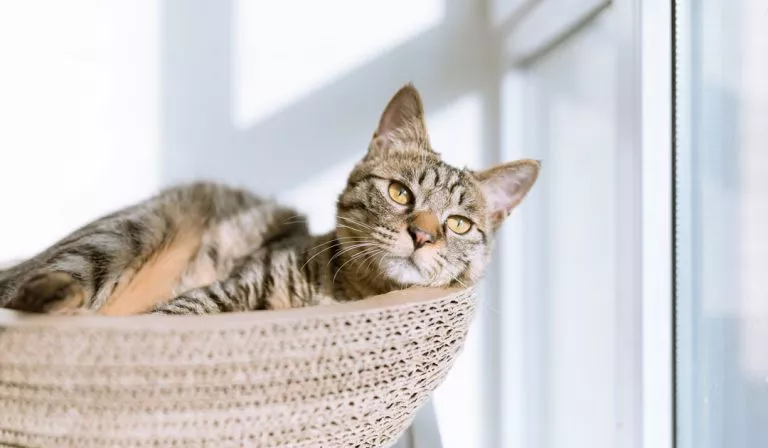

O gato ou gato doméstico é um mamífero carnívoro da família dos felídeos, muito popular como animal de estimação. Ocupando o topo da cadeia alimentar, é predador natural de diversos animais, como roedores, pássaros, lagartixas e alguns insetos.
Expectativa de Vida: 12 – 18 anos (Domesticado) Nome científico: Felis catus Período de Gestação: 65 dias Peso: 4 – 5 kg (Adulto, doméstico) Classe: Mammalia Família: Felidae Origem: Wikipédia, a enciclopédia livre.
O cérebro de um gato é mais parecido com o de um humano do que com o de um cachorro Tanto gatos quanto seres humanos possuem uma região do cérebro idêntica, que é responsável pelas emoções. Além disso, seu genoma é 73% similar ao genoma humano e 80% similar ao genoma dos cachorros!